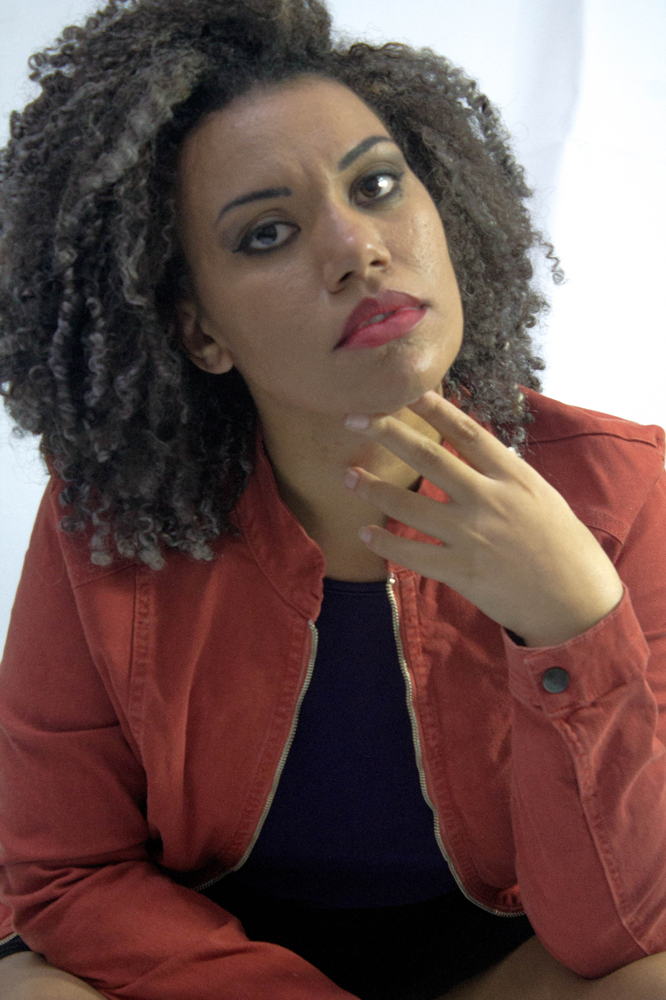

Nossos Dogs

Juciara
This example is a quick exercise to illustrate how the default, static navbar and fixed to top navbar work. It includes the responsive CSS and HTML, so it also adapts to your viewport and device.
Bárbara
This example is a quick exercise to illustrate how the default, static navbar and fixed to top navbar work. It includes the responsive CSS and HTML, so it also adapts to your viewport and device.